Mikrotik
First Time Setup
Securing the Router
Disable wireless if not using it
IP > Services (disable telnet and stuff, only allow certain addresses)
ip service print
System > Password (change the password)
System > Users > double click on the user and set the allowed addresses
Configuring the Bridge
IP > Addresses (giving the bridge an address that will be used as gateway)
Configuring the Outside Interface
Disable ether1 in Bridge
IP > DHCP Client
Configuring DHCP Server for Clients
IP > DHCP Server > DHCP Setup
DHCP Server Interface: bridgeLocal
DHCP Address Space: 172.16.0.0/24
Gateway for DHCP Network > 172.16.0.1
DHCP Relay > delete this
Configure NAT
IP > Firewall > NAT
Chain: srcnat
Action: masquerade
Deny Catch all Firewall Rules
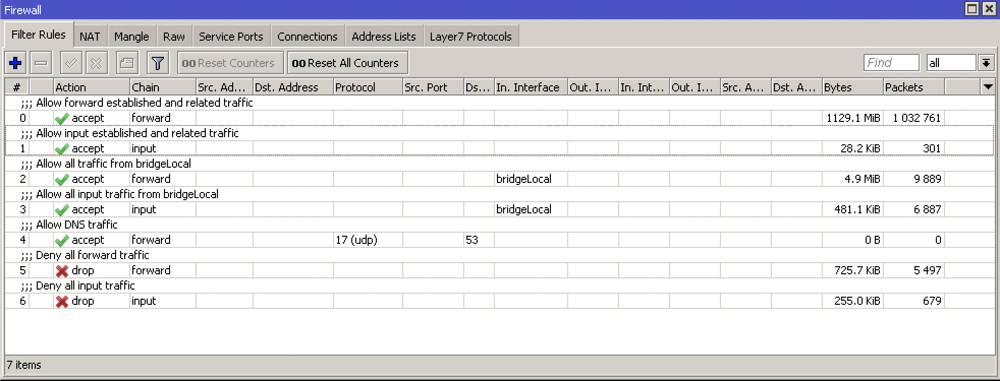Upgrading the Router
System > Packages > Check For Updates > Download&install
Upgrading the Firmware
System > RouterBOARD > Upgrade
System > Reboot
Setting the Identity
System > Identity
system identity set name=Caleb
Users & Groups & SSH Keys
System > Users (here you can admin all your users nad groups, give read only access, etc.)
For SSH keys upload your private key file that you generated
Allow/Deny SSH password Login to disable/enable ssh key login only
ip ssh set always-allow-password-login=no
ip ssh print
HTTPS Access to Router
System > Certificates
Country: ZA
Key Size: 2048
Days Valid: 365
Key Usage: tls server
Sign
IP > Services > enable www-ssl and select the certificate
Backup and Restore
Files > Backup
system backup save encryption=aes-sha256 name=backup
# or (takes a lot of load)
export
export file=export
Files > Restore
import file-name=export.rsc
# or open the file with text editor and copy paste
Resetting Router
Press the reset button until the light stops flashing by unplugging the power, holding the button and powering on
System > Reset Configuration
Netinstall
Only works on ether1
Formats the drive, keeps license key and RouterBOOT settings
Download Netinstall from Mikrotik site and open it
Click Net booting > boot server enabled > put in IP Address of router
Licensing
System > License
DHCP
Discover: broadcast takes place over network
Offer: the server offers the client a lease
Request: client requests the lease from the server
Acknowledge: server sends client ack for the lease
IP > DHCP Server > DHCP Setup
ARP
ARP Request: gets broadcast to find out who the ip address of the mac address is of the ip address
Server puts the clients mac address and ip address in its arp table and replies to client
Mikrotik recommends setting your interface arp to reply-only so that it doesnt learn new arps from anywhere else
IP > ARP
Bridging
Ports in a bridge behave as a switch at layer 2
Bridge
Station Mode
Interfaces > wlan1 > mode: station bridge
Scan and select the WLAN you want to connect to
this will allow one router to connect to the other one wirelessly: ISP <-> R1 <-> wifi <-> R2 <-> PC
Routing
Exterior Gateway Protocol (EGP):
BGP
Interior Gateway Protocols (IGP):
RIP
IGRP (Cisco)
EIGRP (Cisco)
OSPF
IS-IS
IP > Routes
Tunneling / VPN
What is VPN?
Private WAN:
Secure
Confidential
But expensive
Alternative to private WAN is the internet. However, the internet is unsecure and we need a VPN protocol to run to have a secure data transfer from A to B
VPN Features:
Confidentiality: preventing anyone from reading your data using encryption protocols
Authentication: verifying that the router/firewall or remote user that is sending VPN traffic is a legitimate device or router
Integrity: verifying that the VPN packet wasn’t changed during transit
Anty-replay: preventing someone from capturing traffic and resending it, trying to appear as a legitimate device/user
IKEv2 IPSec
All configuration is done under IP > IPsec
Note, according to this Cisco document (https://tools.cisco.com/security/center/resources/next_generation_cryptography), the following algorithms are acceptable:
Authentication: sha384 (384 wasnt available in the below example)
Encryption: aes-256 cbc
Hashing: sha384
DH group: modp3084
Proposal
Select the auth. Algorithm and encr. Algorithm thats NGE acceptable.
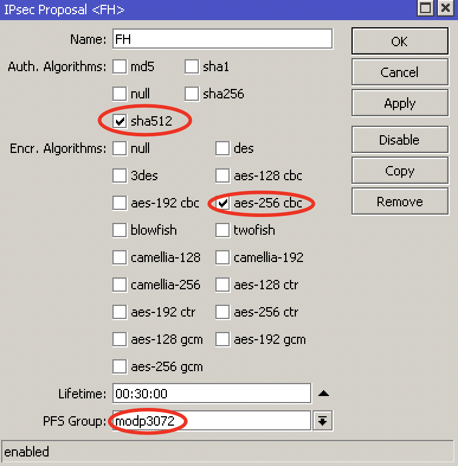Profile
Select the Hash Algorithm, Encryption Algorithm and DH group thats NGE acceptable.
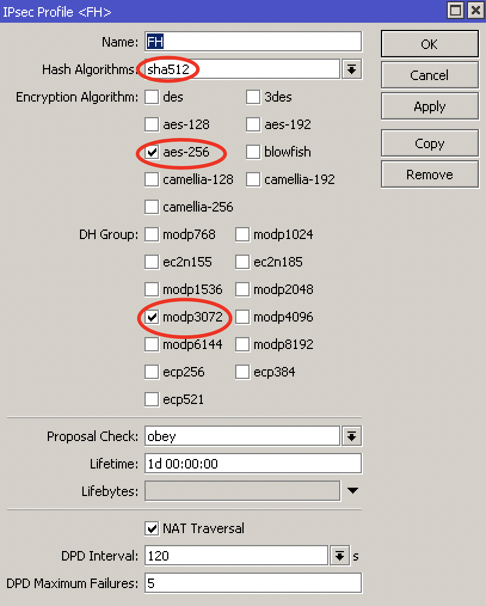Peer
Enter the peer address, select the profile you created and set the exchange mode to IKEv2
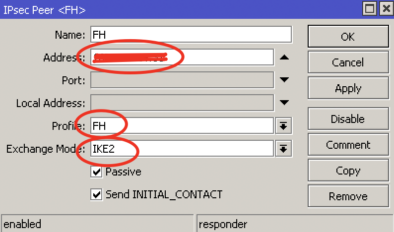Identities
Set a PSK and select the correct peer you created.
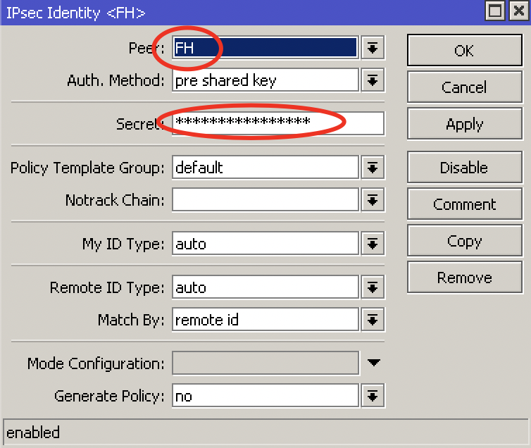Policy
Select the peer you created, set the source and dest addresses, check tunnel.
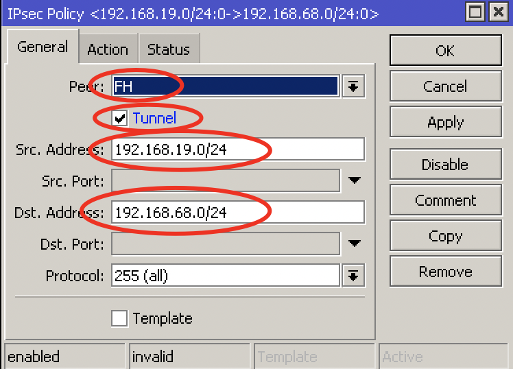Action encrypt:
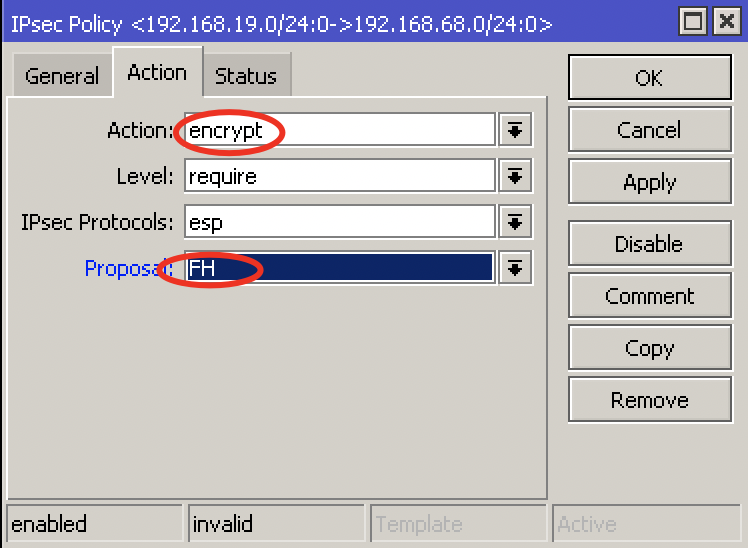Firewall & NAT
Create a srcnat rule with action accept to no-nat the traffic. Put this rule on top.
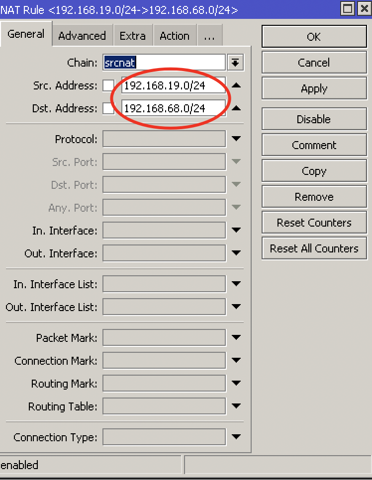Create a firewall rule to allow the traffic. Action accept, chain forward.
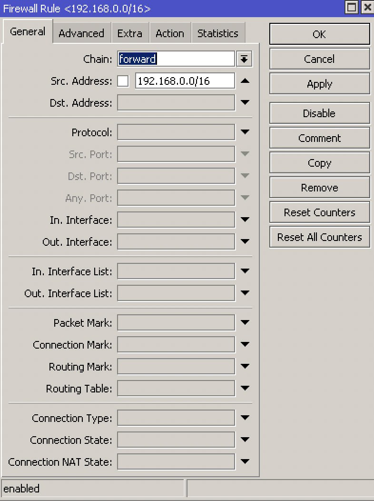PPTP
What is PPTP:
PPTP means Point-to-Point Tunneling Protocol
PPTP was introduced in 1995
PPTP is considered a weak VPN protocol in terms of security
PPTP uses port 1723 to establish a peer connection and uses port 47 (GRE)
On Mikrotik, PPTP supports site to site and client to site VPN tunneling
Advantages:
Easy configuration
Very fast VPN protocol
Available on most platforms
Disadvantages:
PPTP encryption is weak
A PPTP connection can be exploited by cybercriminals with malicious attacks
A PPTP connetion can be blocked quite easily by firewalls
A router with PPTP passthrough is usually required since PPTP doesn’t natively work with NAT
Site to Site Configuration:
On the main router:
PPP > Interface > PPTP Server
PPP > Secrets > +
Name: put a name here
Password: put a password here
Profile: select the default-encryption profile or a profile you created
Local address: the local address of your router
Remote address: the local address of the other router
On the branch router:
PPP > Interface > + > PPTP Client > Dial Out
Connect to: public IP of main router
User: the username
Password: the password
Add a route to the local network on each router (IP > Route)
L2TP Site-to-Site
On your main router:
Create the PPP Profile
PPP > Profiles
Name: Put the name of the ppp profile
Protocols tab > Use Encryption: yes
Enabling L2TP Server with IPSec
PPP > Interface > L2TP Server
Click enabled
Use IPsec: yes
Enter IPsec Secret (this is the PSK that will be for client-to site and site-to-site connections, because we must use one profile for both configurations)
PPP User Configuration
PPP > Secrets
User: username
Password (put in password that will be used by the client - not the same as the PSK we setup above)
Local Address: 172.16.19.1 (or any local IP address)
Remote Address: 172.16.19.2 (or any local address that can reach local address)
Routes: put in static route, for example: 192.168.100.0/23 172.16.19.2
On your other router:
Create the PPP Profile
PPP > Profiles
Name: Put the name of the ppp profile
Protocols tab > Use Encryption: yes
L2TP Client Configuration
Interfaces > + > L2TP Client
General:
Name: enter name of interface
Dialout:
Connect To: public IP Address of main router
User: user
Password: put in your users password
Profile: select the profile you created
Use IPsec
IPSec secret: enter your ipsec secret
Static Router Configuration
IP > Routes
DST Address: remote subnet
Gateway: name of your L2TP interface
L2TP Client-to-Site
Pool
IP > Pools > create IP pool
L2TP Profile
PPP > Profiles:
Name: L2TP Client-to-Site
Local Address: the local address of your router
Remote Address: l2tppool
L2TP Server
PPP > Interface > L2TP Server
IPSec Proposal
IP > IPsec > Proposals
IPSec Profile
IP > IPsec > Profiles
GRE IPSec
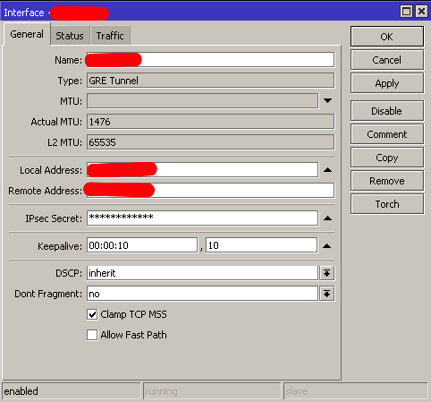 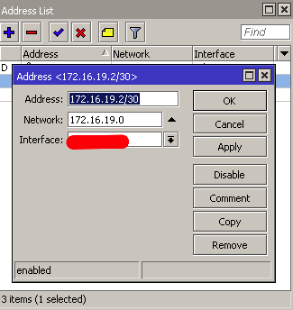 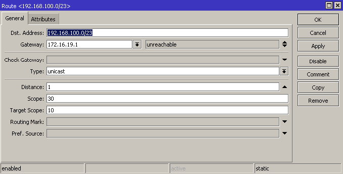SSTP
What is SSTP:
SSTP means Secure Socket Tunneling Protocol
SSTP is a VPN protocol developed my Microsoft and introduced by them with Windows Vista
SSTP is considered a safe VPN Protocol
SSTP uses TCP port 443 - the same port used by HTTPS traiffic
SSTP can bypass NAT firewalls
On Mikrotik, SSTP supports site to site and client to site VPN tunneling
Advantages:
SSTP encryption offers a decent level of security
Easy configuration
Very difficult to block SSTP because it uses TCP port 443 (same as HTTPS)
Very stable
Disadvantages:
SSTP protocol clients are available on limited number of platforms (Windows, Android, etc.)
Possible TCP meltdown problem
Site to Site Configuration:
On the main router:
PPP > Interface > SSTP Server
PPP > Secrets > +
Name: put a name here
Password: put a password here
Profile: select the default-encryption profile or a profile you created
Local address: the local address of your router
Remote address: the local address of the other router
System > Certificates > +
Name: CA-Template
Common Name: public IP of the router
SAN: IP
System > Certificates > +
Name: Server-Template
Common Name: server
SAN: IP
System > Certificates > +
Name: Client-Template
Common Name: client
SAN: IP
certificate sign CA-Template ca-crl-host=192.16.12.1 name=myca
certificate sign Server-Template ca=myca name=server
certificate sign Client-Template ca=myca name=client
certicicate set server trusted=yes
certificate set client trusted=yes
certificate export-certificate myca export-passphrase=12345678
certificate export-certificate client export-passphrase=12345678
PPP > Interface > SSTP Server > Certificate: server
On the branch router:
PPP > Interface > + > SSTP Client > Dial Out
Connect to: public IP of main router
User: the username
Password: the password
System > Certificates > Import > myca.crt
System > Certificates > Import > myca.key
System > Certificates > Import > client.crt
System > Certifiicates > Imports > client.key
PPP > Interface > SSTP > certificate: client
Add a route to the local network on each router (IP > Route)
Client to Site Configuration:
PPP > Interface > SSTP Server
PPP > Secrets > +
System > Certificates > +
Name: CA-Template
Common Name: public IP of the router
SAN: IP
System > Certificates > +
Name: Server-Template
Common Name: server
SAN: IP
System > Certificates > +
Name: Client-Template
Common Name: client
SAN: IP
certificate sign CA-Template ca-crl-host=192.16.12.1 name=myca
certificate sign Server-Template ca=myca name=server
certificate sign Client-Template ca=myca name=client
certicicate set server trusted=yes
certificate set client trusted=yes
certificate export-certificate myca export-passphrase=12345678
certificate export-certificate client export-passphrase=12345678
Import the client and server certificates to the Windows PC into Trusted Root Certification Authorities
PPPoE
Point-to-point over Ethernet is a layer 2 protocol
It is often used by ISPs to control access to their networks
It can be used as a method of access on any layer 2 technology, such as 802.11 or Ethernet
You cannot reach a PPPoE server through routers. Since its layer 2 protocol, the server can only be reached through the same Ethernet broadcast domain on which the clients are
IP > Pool
PPP > Profiles > + > change tcp mss yes
PPP > Secret
PPP > PPoE Servers
On the other router > PPP > PPoE Scan
On the other router > PPP > Interface > PPPoE client
L2TP Ports and Protocols
https://serverfault.com/questions/451381/which-ports-for-ipsec-lt2p
Protocol: UDP, port 500 (for IKE, to manage encryption keys)
Protocol: UDP, port 4500 (for IPSEC NAT-Traversal mode)
Protocol: ESP, value 50 (for IPSEC)
Protocol: AH, value 51 (for IPSEC)
Firewall
Basics
Stop unauthorized access
Block unwanted ports
Classify and mark connections and packets for QOS or Routing policy
Firewall functions:
Filter packets using filter rules
NAT: SRCNAT and DSTNAT to translate source and destination addresses
Mangle: to mark connections and/or packets
RAW: drop or bypass packets before reaching the connection tracking
Service ports: using NAT helpers
Chains:
Input = to the router
Output = from the router
Forward = via the router
Firewall Basics:
Rules processed in order
If … then
If not matched, then packet is accepted
Firewall Actions:
Passthrough = count packets/bytes
Drop = discard a packet
Reject = discard a packet but send ICMP message or TCP reset
TCP reset kills a TCP connection instantly
Tarpit = send ACK flag but dont open the connection
Layer 3 Chains
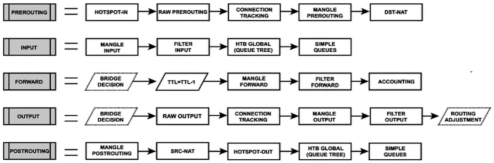Connection States
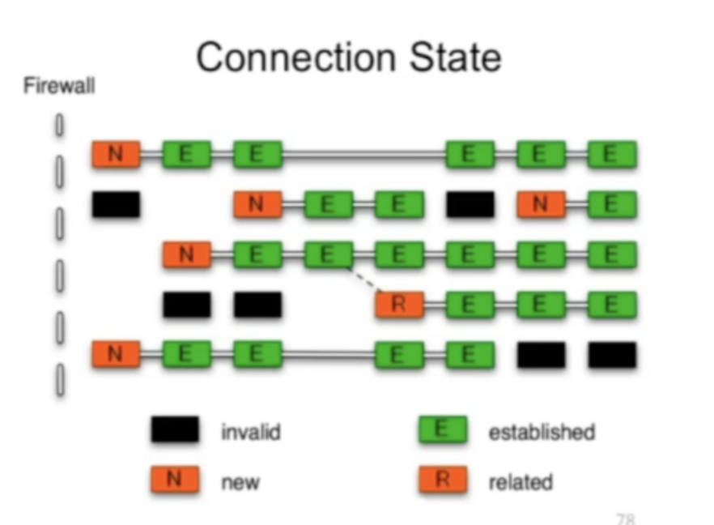New: The 1st packet observed by the firewall will be new. The firewall will check the packet and if allow then the next packet going to the other direction of that stream will create an established connection
Established: a stream of packetstaht successfully pass both directions of the firewall. Established backets will not be evaluated by the firewall.
Related: they are not considered part of the connection itself but related to it.
Invalid: packets arrived out-of-order to the router or with invalid sequence number. Advise to drop them always.
Rules
IP > Firewall > +
Forward rule > Established, Related, accept
Input rule > Established, Related, accept
Forward rule > Invalid > drop
Input rule > Invalid > drop
Forward rule > allow local lan
Input rule > local lan accept
Forward rule > drop anything else
Input rule > drop anything else
Redirect DNS to Router’s DNS
IP > DNS > Allow Remote Requests
IP > Firewall > dstnat > protocol tcp&udp 53 > action redrirect 53
IP > DNS > cache
Destination NAT
IP > Firewall
chain: dstnat
Protocol: 6 (tcp)
Dst port: 80
Action: dst-nat
To Address: 172.16.1.254
To Ports: 80
FastTrack
FastTracked packets bypass firewall, connection traffic, simple queues, queue tree with parent=global, ip traffic-flow (restriction removed in 6.33), IP accounting, IPSec, hotspot, universal client, VRF assignment, so it is up to admin to make sure FastTrack doesnt interfere with other config
Queues > 1M / 1M (on all IPs - so all PCs connected get only 1Mbps)
IP > Firewall > Mangle
Chain: forward
Src Address: 192.168.88.2
Action: mark connection
New Connection Mark: PC-conn
IP > Firewall > General
Chain: forward
Connection Mark: pc-conn
Action: fasttrack connection
QoS
Simple Queue
Simple queues limit bandwidth to:
client upload
client download
client aggregate (download and upload)
Simple queue is applied to a target (mandatory) which can be:
An IP Address
A network subnet
an interface
Simple queues work in sequence which means that each packet must go through every simple queue until a match occurs
Destination is where the target’s traffic is aimed and it is not compulsory as the target
Queue > Simple Queue > +
Tools > Bandwidth Test
Burst
Burst is important to give extra bandwidth limited time
Burst Limit = 512K
Threshold = 192K
Time = 8s
First client gets 512Kbps for 3 seconds because:
1 sec = 64K (less than threshold then burst is possible)
2 sec = 128K (less than threshold then burst is possible)
3 sec = 192K (equal to the threshold then burst end)
Queue > Simple queue > General > +
Max Limit: 3M
Burst Limit: 5M
Burst Threshold: 2M
Burst time: 10s
Bandwidth limit divided by time. On the first second you’ll get 500Kbps extra, etc. until the Burst Limit is reached. Then the speed will go back to normal.
Per Connection Queue (PCQ)
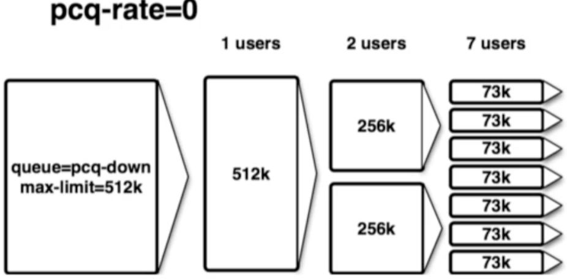 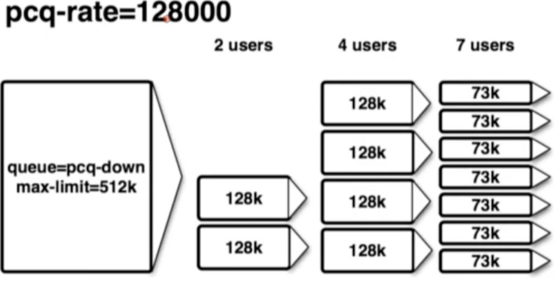Queues > Queue Types > copy pcq upload
Type Name: PCQ Upload
Rate: 0
Queues > Queue Types > copy pcq download
Type Name: PCQ Download
Rate: 0
Queues > General > Simple queue > +
Queue Type: PCQ Upload/Download
Tools
Ping
Tools > Ping
Traceroute
Tools > Traceroute
Profile
Tools > Profile
tool profile
Emails
Tools > Email
Netwatch
Tools > Netwatch > +
Up: /tool e-mail send to=calebsargeant@gmail.com subject=”Router is up” body=”Router is up on $[/system clock get time]”
Down: /tool e-mail send to=calebsargeant@gmail.com subject=”Router is down” body=”Router is up on $[/system clock get time]”
Monitoring
Torch
Tools > Torch
Graphing
Tools > Graphing > Interface rules
Tools > Graphing > Resource rules
http://ip of mikrotik/graphs
The Dude
Dude > Settings
Install the dude on your PC
Open it up and click discover, put in your subnet
Wireless
Terminology
What is wireless?
RouterOS supports various radio modules that allow comminication over the air (2.4GHz and 5GHz)
MikroTik RouterOS provides a complete support for IEEE 802.11a, 802.11b, 802.11g, 802.11n and 802.11ac wireless networking standards
Wireless standards
IEEE 802.11b - 2.4GHz frequencies, 11Mbps
IEEE 802.11g - 2.4GHz frequencies, 54Mbps
IEEE 802.11a - 5GHz frequencies, 54Mbps
IEEE 802.11n - 2.4GHz - 5GHz 150Mbps (300Mbps)
IEEE 802.11ac - 5GHz frequencies 1Gbps
802.11b,g frequency range
Channels 1,6 and 11 non-overlapping
 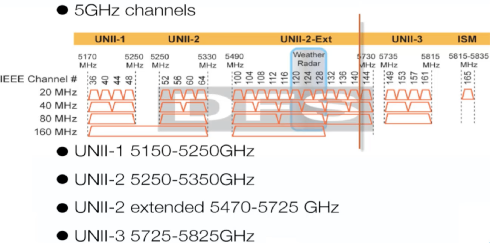
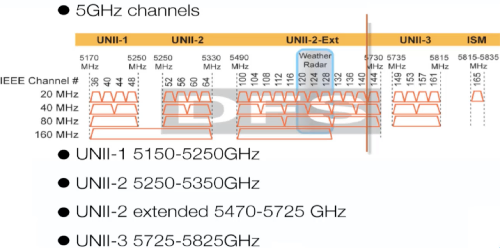
Supported Frequencies
Depending on your country regulations wireless card might support
2.4GHz: 2312 - 2499 MHz
5GHz: 4920 - 6100 MHz
Setup
Wireless > Security Profiles > +
Wireless > WiFi Interface > enable and configure, select the Security Profile
you can use freq usage to check which frequency has little usage
you can use Snooper to see what’s connecting via wifi
Station
Make the router a client (nobody connected to that router can get internet)
Wireless > mode station
Mac Filtering
Default Authenticate allows clients to authenticate. Turning it off you must use Wireless > Access list to allow certain clients to access your wifi.
Default forward disabled prevents wifi clients from communicating to each other in the wifi.